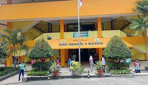

berita
saya akan memberitakan sesuatu yang ada di indonesia, yang berjudul
KORUPSI
“Saya salah satu wali murid dari SMKN 3 Pajajaran saya merasa keberatan dengan adanya uang sukarela yang nominalnya sudah ditentukan oleh pihak sekolah, sedangkan nominal terkecilnya aja tiga juta, terus terang saya merasa keberatan”. Ucapnya Melalui pesan elektronik (12 Oktober 2022).
Lebih lanjut, narasumber tersebut menuturkan situasi serupa dialami oleh orang tua siswa lainnya dengan kondisi sama-sama merasa keberatan dan berpotensi memberhentikan diri dari menempuh Pendidikannya.
“Bahkan ada salah satu siswa yang tahun kemaren aja belum kebayar uang sukarelanya terus sekarang sudah datang lagi uang sukarela yang nilainya cukup besar,dia merasa keberatan dia bukan orang mampu, dia sempet bilang kalau gini terus dia mau berhenti” tuturnya.
Menanggapi hal itu, sontak redaksi media bharatanews.id membentuk tim investigasi untuk menelusuri kejadian yang dialami orang tua peserta didik yang tengah kesulitan.
Dari hasil penelusuran panjang tersebut, kami menghimpun informasi-informasi dari beberapa narasumber terkait “sumbangan sukarela” yang dihadapkan kepada seluruh wali peserta didik dan terbagi menjadi 4 kategori, sebagai berikut:
Kategori 1: Rp. 4.473.515
Kategori 2: Rp. 4.026.164
Kategori 3: Rp. 3.578.812
Kategori 4: Rp. 3.131.461
solusi mencegah{kind=link}